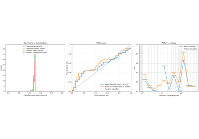

CTLearn tutorials#
Step-by-step examples for downloading and exploring public simulated CTAO data, training CTLearn models, and running inference on image and waveform data.
The tutorials use small datasets to keep the examples manageable. Their performance metrics are for demonstrating the workflow and are not representative of a production-level analysis. Tutorial 1 (T1) downloads and converts the public simulation data and explores its waveforms and images. Tutorial 2 (T2) trains CTLearn models with Keras and PyTorch using image and waveform data. Tutorial 3 (T3) runs inference with those models, explores the resulting DL2 data, and plots classification and reconstruction performance.
This tutorial downloads a small SimTel sample for the monoscopic examples and
four CTAO simulation files from Zenodo record 7298569 for the stereo example. The four Zenodo
files comprise gamma-ray and proton samples, each from two runs, 00
and 01. The 00 run files are used for training in Tutorial 2,
while the 01 run files are held out for prediction in Tutorial 3.
Together, they require about 3.5 GB of disk space. By default, data are stored under
~/.cache/ctlearn/tutorial-data; set CTLEARN_TUTORIAL_DATA_DIR to use a
different directory. Set CTLEARN_TUTORIAL_MAX_EVENTS to a positive integer
(for example, 500) to limit event processing per input file. Leave it unset to
process the full files, and use the same setting for all three tutorials.
The CI workflow preloads the source files, caches the converted products, and
sets the limit to 500 events per input file.
The training tutorial documents monoscopic energy and direction regression,
gamma/proton classification, custom SingleCNN and ResNet architectures,
transfer learning with LoadedModel, stereo image stacking, and waveform
training. It uses only the converted gamma-ray and proton 00 files for the
image examples and leaves the 01 files untouched for later evaluation in
Tutorial 3. The three example JSON configs are in docs/source/config in the
repository or config in the downloaded ZIP. The tutorial uses the descriptions
from the training notebook and executes every example sequentially during
the documentation build. This requires working TensorFlow and PyTorch
installations and can take substantial time and compute resources.
Live training monitoring is available through TensorBoard. Start TensorBoard
in a separate terminal window and point it to the training output directory
and open a browser with the URL printed by TensorBoard (typically
http://localhost:6006).
$ tensorboard --logdir $HOME/.cache/ctlearn/tutorial-training/
Note
Cluster users have to set up port forwarding to access TensorBoard in their browser. For example, if you are using a cluster with a login node, you can set up port forwarding like this:
$ ssh -L 6006:localhost:6006 user@cluster-login-node
The prediction tutorial runs the Keras and PyTorch models produced by the
training tutorial on the held-out 01 CTAO simulation files. Each command
shows the model file path and configuration options explicitly. It plots
classification scores and ROC/AUC for both frameworks, plus regression
migration matrices and energy and angular resolution. The shared DL1 reader
configuration is shown in each command and controls telescope selection,
image channels, image mapping, and quality cuts. The tutorial also demonstrates
stereo prediction, waveform inference, and the LST-1 tool using a generated
mock DL1 file. The waveform example reuses training data only to demonstrate
the workflow; it is not an evaluation.
The classifier and resolution figures are demonstrations on small samples
and should not be used for scientific conclusions or interpreted as production
instrument response functions. DL2 files are written to the same output directory
and can be inspected with ViTables. The following command opens the DL2 files
in ViTables:
$ pip install vitables
$ vitables $HOME/.cache/ctlearn/tutorial-training/predictions/*.dl2.h5
Note
Cluster users have to make sure to allow X11 forwarding to run ViTables.
For example, if you are using a cluster with a login node, you can set up
X11 forwarding like this:
$ ssh -X user@cluster-login-node
Download the Python or Jupyter ZIP for all examples using the links at the
bottom of this gallery, and extract it. Each individual tutorial page also
offers a ZIP containing that tutorial and its notebook. The ZIPs include a
config/ directory with the JSON configuration files; keep it alongside the
scripts or notebooks. Choose how to obtain and run the tutorials:
Download the Python ZIP for all examples using the link at the bottom of this gallery.
$ python -m pip install "ctlearn[docs]"
$ unzip auto_tutorials_python.zip -d ctlearn-tutorials
$ cd ctlearn-tutorials
$ export CTLEARN_TUTORIAL_DATA_DIR=$HOME/.cache/ctlearn/tutorial-data # optional: set a different cache location
$ export CTLEARN_TUTORIAL_MAX_EVENTS=500 # optional: limit events for fast execution of tutorials
$ python explore_public_data.py
$ python train_ctlearn_model.py
$ python predict_ctlearn_model.py
Download the Jupyter ZIP for all examples using the link at the bottom
of this gallery. Start Jupyter in the extracted directory, then open
and run the notebooks in order: explore_public_data.ipynb,
train_ctlearn_model.ipynb, and predict_ctlearn_model.ipynb.
$ python -m pip install "ctlearn[docs]" notebook
$ unzip auto_tutorials_jupyter.zip -d ctlearn-tutorials
$ cd ctlearn-tutorials
$ export CTLEARN_TUTORIAL_DATA_DIR=$HOME/.cache/ctlearn/tutorial-data # optional: set a different cache location
$ export CTLEARN_TUTORIAL_MAX_EVENTS=500 # optional: limit events for fast execution of tutorials
$ jupyter notebook
Alternatively, clone the repository and install its documentation dependencies:
$ git clone https://github.com/ctlearn-project/ctlearn.git
$ cd ctlearn
$ python -m pip install -e ".[docs]"
$ export CTLEARN_TUTORIAL_DATA_DIR=$HOME/.cache/ctlearn/tutorial-data # optional: set a different cache location
$ export CTLEARN_TUTORIAL_MAX_EVENTS=500 # optional: limit events for fast execution of tutorials
$ python examples/tutorials/explore_public_data.py
$ python examples/tutorials/train_ctlearn_model.py
$ python examples/tutorials/predict_ctlearn_model.py
Run the tutorials in order: the training tutorial uses data prepared by Tutorial 1, and the prediction tutorial uses models created by Tutorial 2.

Tutorial 3 Perform inference with CTlearn models